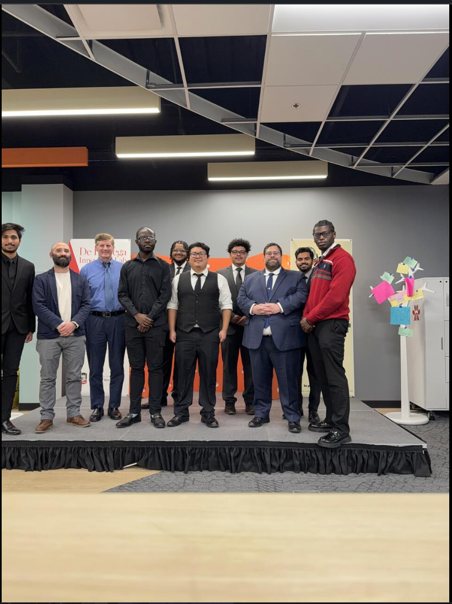
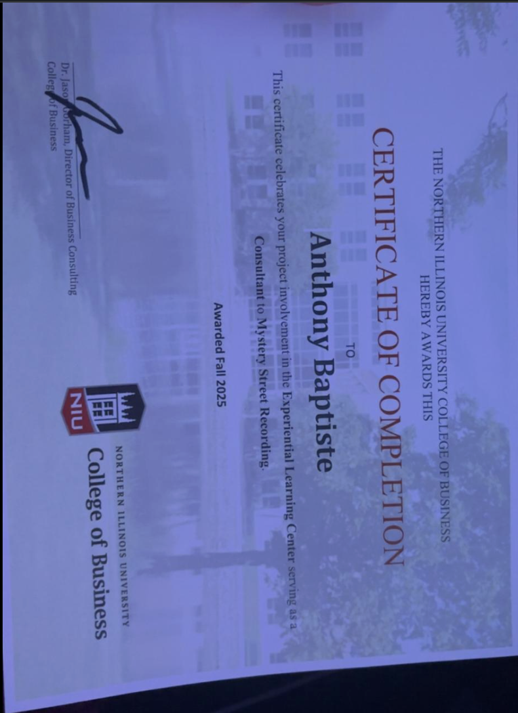

From operational reporting to research and consulting, these experiences reflect the environments where I’ve learned to connect technical work to practical decisions.
Undergraduate Researcher - NIU College of Business
I contribute to research on how large language models can support interview-based qualitative research without replacing human interpretation. My work has included generating AI personas based on real participants, running matched AI interview simulations using the same protocol as the human interviews, comparing transcripts across diagnostic categories, and helping build Custom GPT and Streamlit tools that make the workflow more structured, repeatable, and useful for researchers.
Student Consultant - Mystery Street Recording Company
Through NIU's Experiential Learning Center, I worked on a consulting project for a Chicago-based recording studio. I led competitive and customer analysis across peer studios, reviewed SEO and campaign performance data, and helped turn fragmented market information into clearer recommendations around audience, positioning, and growth. This experience strengthened my ability to connect analysis to a real client need and present findings in a way leadership could act on.
Supporting material

Team or project collaboration

Certification or training
Network Planning Intern - Shipt
At Shipt, I worked on network planning analytics for a large delivery operation and helped build reporting that made day-to-day performance easier to monitor and interpret. I designed and deployed a Tableau analytics system, automated recurring reporting workflows, and partnered with Market Operations and Network Planning to translate operational questions into dashboards and performance views. It was one of my most formative experiences in combining analytics with real operational decision-making.
At Innovation DuPage, I supported reporting and operational analysis across several programs by building and maintaining Tableau dashboards, improving Salesforce reporting, and using Excel models to explore engagement trends. A big part of the role was helping bring more consistency to KPI definitions and making reporting easier for stakeholders to understand and use. That experience gave me a stronger appreciation for reporting clarity, stakeholder trust, and the day-to-day value of well-structured analytics.
Community Ambassador - ACM NIU
As an ACM Community Ambassador, I helped support NIU's computing community by promoting events, encouraging student involvement, and connecting peers with technical, academic, and professional opportunities. The role gave me another outlet for leadership and reinforced how much I enjoy building communities around learning, career growth, and shared interest in technology.